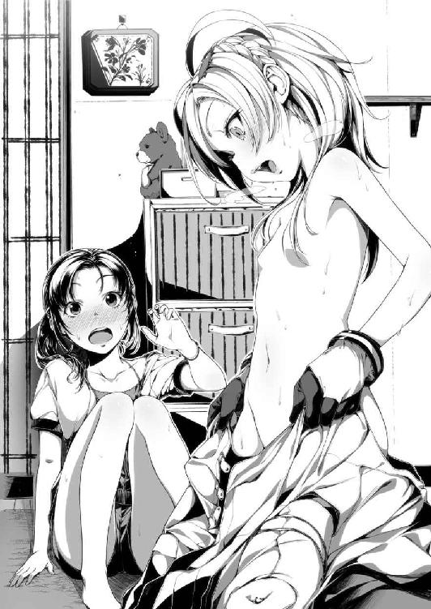

| 釣り女と超能力少女<電波女と青春男> (電撃文庫) | |
| 入間 人間 | |
| (2012) | |
本書（電子版）に掲載されているコンテンツ（ソフトウェア／プログラム／データ／情報を含む）の著作権およびその他の権利は、すべて株式会社アスキー・メディアワークスおよび正当な権利を有する第三者に帰属しています。
法律の定めがある場合または権利者の明示的な承諾がある場合を除き、これらのコンテンツを複製・転載、改変・編集、翻案・翻訳、放送・出版、公衆送信（送信可能化を含む）・再配信、販売・頒布、貸与等に使用することはできません。
電波女と青春男 短編 釣り女と超能力少女
なんつーか、大人と子供の違いって歩幅だよね。
近所のアパートに住んでいる、変な帽子を被った人がこの前そう言っていた。
子供の頃はさぁ、僕も限界感じられないほど走ることができて。でもあれって単に、限界に、壁にぶつかる速度が遅かっただけなんだよな。歩幅に差があるから、壁に辿り着く速さが違うわけ。だから子供は諦めが悪くて、大人は早い。勿論、個人差はあるけどね。
その時の私は半分聞き流しながらも、一理あると納得したものだ。大人に属するような年齢になって、妥協は年々増え続けている。お金に、お休みに、人間関係に。
まぁ、こんなもんかなー。
そう思って、悩みがぼんやりと霞がかることが多くなった。
きっと最近の私は頭を壁にごっつんごっつんぶつけるのを止めて、立ち惚けている。
ぽけーっと口を半開きにして、一応ながら魚が釣り針にかかるのを待っているのだ。この頃の鏡にはいつも、二十六歳、冴えない風貌と化粧気のない地黒女がマヌケ面で映るのだから。
なるほどねー、にいちゃん、良いこと言うじゃねーの。褒めたら調子に乗って本題とばかりに口説かれたけど店にいる蛇の籠をけしかけたら逃げていった。きゃーこわーい、だって。
そんなことを、初夏の日差しの下で思い返していた。河川敷は今日も蒸発しそうなほど暑い。
今年は六月後半の雨が酷いものだった。目の前を走る川も増水して大荒れで、もし飛びこもうものなら濁った水中で上下の区別がつかなくなって溺死すること確実な具合だった。
私の腰ほどもある植物が群生している下流周辺まで水が溢れて、その間はこうして休日に足を運ぶことも叶わなかった。店の中に引っこめていた連中も騒々しくて敵わなかったし。
今はそんな、梅雨全盛期の面影もない晴天。人気のない河川敷は静かそのもので、時折、橋の下から抜けてくる風が耳の裏を撫でるように吹いて、ごぅっと、渦を巻く音がするだけ。
十センチほどの高さで不思議と揃えられた草を踏む感触と、風に揺れる景色が心地良い。
梅雨明け宣言を受信してやっとこ働きだしたように、入道雲と薄い青色の空が頭上を覆い尽くしている。あれだけ潤沢だった川の水も半分以下まで気化して、目を凝らせば水草だらけの水底を覗きこむことができる。それと川の水位が低くなると、途中に点在する浮島がまた頭を覗かせるようになった。その島の一つには誰かが乗り捨てていった白い軽自動車が、藻を繁殖させながらも未だ留まっている。あれだけの洪水でも流されないんだなぁ、と感心した。
「......おーいるいる、魚が泳いでいる。なのに、かからん」
手製の形ばかりの釣り竿をバシバシと叩きながら、川の苔に群がる魚を見下ろす。
おーいお前ら、お腹減ってないの？ 私は減ったから、お前を食わせなさい。
大人になったことで身についた私の癖は、釣りごっこ。ニコチンやアルコールを取りこむことは試しても合わなかったけれど、これだけは癖として残った。決して趣味ではない。なにしろ魚が釣れたことは一回もないからだ。餌は一応、虫系統のものをくっつけているけどこれが魚共には見向きもされない。魚も好き嫌いあるんだねぇ。私は魚全般好きなのに。食うのが。
「はーっ......」と生温い息を吐いて、降りかかる日差しに熱された髪を手のひらで覆う。
昔、神様が釣りをしている絵を観たことがある。釣り糸は地球の海面に垂らされて、神様自身は宇宙にいた。神様も釣りをするのかーと感心すると同時に、宇宙人＝神様なのかーと子供心に思ったものだ。そんな御高尚な趣味である釣りを、私も嗜んでいるわけだ。
ただ河川敷にぼーっと座っていても五分で飽きるけれど、釣り糸を垂らしていると不思議と、何時間も居座ることができた。多分、未知のものが生まれるからだ。もしかしたら、魚が釣り針に引っかかるかも知れない。なにかが、起きるかも知れない。そういう期待感を込めて釣り竿を絶賛放置することで、私はなんとなく、ここにいる意味を見出すのだ。
知識と知覚が年齢と共に拡大するにつれて、私の人生は浅くなっていく。人は基本、浅く広くに成長していく生き物だ。まぁそれを成長と捉えるかは人それぞれだけど、私は肯定的な意味で捉えている。深く狭い者同士で社会を作っても交流がしづらくて仕方ない。これで結構。
海に深々と潜らなくても、もしかしたら、浅瀬にお宝が流れ着くことだってあり得るわけで。そういう棚ぼたを期待した釣り針は、本当にうんともすんともお誘いがかからない。
水に沈むカイコの幼虫はまるで生きているようにゆらゆら、釣り針と共に揺れている。
「餌になるってどこかで見たんだけど、ここらへんの魚は嫌いなのかな」
まー、私も幼虫を生で食べるのは苦手だし。魚の気持ちも分かるよ。いっそ焼いてくるか？
などと熱射病にかかりそうな直射日光の中、亀のように身をジッと固めて休日を満喫していた。そこまでは普段と同じ、釣り針の出番がない週末をなぞっているだけだった。
「......あ？」
上流から、『それ』が流れてくるまでは。
思わず目を見張り、硬直してしまう。頭の中が真っ白になりかけて、風で眉毛と前髪を煽られたことで多少は落ち着く。今まで外に出る機会を待っていた汗が、一斉に噴き出した。
なに、あれ。
川の上流からどんぶらこと流れてくるのは桃色ではなく、白。いや白銀。もっさりしていて夏場には絶対に着たくない厚手の、宇宙服？ に包まれた人型の物体が仰向けに漂流してくる。顔面を覆うバイザー部分が水面のように光を反射して眩しい。色んな意味で直視できない。
そいつは川の流れに身を任せるように微動だにしない。人形か模型だろうか、と目を凝らすもそんなものを見極められるような経験は積んでいない。あ、浮島に手足が引っかかって漂流が遮られた。ぷかぁと、少し沈んで、浮き上がってを寝息のように規則正しく繰り返す。
どうする。いや、どうかするのか。助けた方がいいのか、見なかったことにするべきか。中身が既にドザエモンだったら触るのも嫌だなぁ、と先走った心配をして鳥肌を立てつつ、中途半端に浮かしたお尻がまた地面に着きそうになった頃、運命が私に一つの悪戯を化した。
釣り糸が、私の手を借りずともなにかに引っ張られる。先程から、目を見張りっぱなしだ。
「かかった！ え、ちょ、あいやー、どうしよう！」
釣り竿が催促するように揺れる。何はともあれ縋るように掴んで、その手応えにおののく。川に引きずりこまれようとする釣り竿を中腰で支えながら、注目は宇宙服の方に傾いてしまう。なんだこの二択を迫られている感覚は。宇宙野郎が溺れていたら、一刻も早く救助に向かうべきだ。でも生まれて初めて魚と格闘中の釣り竿を放り捨てるのもあまりに惜しい。およそ私と無縁であろう他人の人命か、快挙を手放さないか。
天秤にかけている時点で非人道的かそうか、それがどうした！
私はね、人間が別に好きじゃないの！
両目をギュッと瞑る。額の骨の上に溜まっていた汗が流れ出して、瞼の上を熱く通過する。両手ごと奪われてしまいそうな、重厚な感触が指先を痺れさせる。釣ってから、助け......。
あーもう、どちくしょう！
目を見開いて、釣り竿を手放して目元を力強く拭う。これは汗じゃない、私の涙だ！
身動ぎしない宇宙野郎と、餌よこせと鬱陶しい魚の両方に向けて、ヤケクソに叫ぶ。
「動くなよ！ 今更動くなよ、助けてやるから！」
川に飛びこむ。実際、川や海で溺れている人を助けに行くと二人で溺死、なんて話はよく聞く。しかしあれは溺れている人が必死にしがみついてくるから起こりうる事故であり、一切の動きを見せないで浮かんでいるだけの怪しい漂流物を拾い上げることは、がーっ、めんどくさい！ とにかくな、ぶっちゃけな、私は今日死んでも構わない！ どーでもいいわー！
川を泳いでいるのだか水面を蹴っているのだか曖昧模糊に全力で突っ切り、宇宙服に包まれた右腕を掴む。もこっとした服の奥に、細い腕を掴む感触。間違いない、中身は生身の人間が入っている。全体像は小柄で、少女のようだと第一印象で思った。それと川が浅くて足が着くことも判明して、なにかがやるせなくなった。なにこんな浅い川で漂流してんだこいつ。
その認識の直後、ヘルメット部分が跳ね上がった。バイザー越しに中身を窺わせないそれが私の顔面を捉えて、こっちの方がビクッと怯える。そして、宇宙服の向こうから声が届く。
「なんだ貴様。なにか用か」
バイザー越しのくぐもった、けれど確かな日本語が私に問いかける。声質はやはり女の子らしくて、甲高い不思議な声色だった。規格外の音に気圧されつつも、その態度に腹を立てる。
「用かって......あんたね、川に人が流れていたら助けるでしょ、普通」
魚と天秤にかけて葛藤したけど。宇宙服少女が私の言葉に沈黙する。無言の圧力が渦巻く。ずぉぉぉぉとか幻聴が聞こえてきそうだった。川の水に浸っている胸の下まで寒々しくて、そこから上は未だ暑苦しい。身体がそのまま横に千切れてしまいそうなほどの違和感を覚える。
無言に耐えきれず、結局、私から話しかけてしまう。川から出て話せよ、と自分に突っ込みつつ。
「なんで川を流れてたのよ」
「着陸に失敗した」
宇宙服少女はこともなげに言う。仰っている意味が分かりません。
「着陸？ せめて着水の間違いでしょ」
「ほぅ、それが噂に聞くワカモノの日本語の乱れというやつだな。バカ発見よーし」
よーしとか構えちゃう。なにかしらこのムカツク生き物。見た目バカなのはそっちだし。
「大体着陸って、どこから落ちてきたのよ」
まさかその格好からして、ロケットから落っこちてきましたなんて言わないでしょうね。
尋ねると、宇宙服少女は鼻で笑った、気がする。不敵に、無知を小馬鹿にするように。
なにをバカなことを、と宇宙服少女が肩を揺する。
そして、バチャバチャと水滴を振り払う音と共に。
青空、の更に向こう。無限に広がる例のアレからやって来たと、高々と指差す。
「宇宙に決まっているだろう、宇宙人なのだから」
「.............................................」
下流へと流れていってしまった釣り竿と、そして魚が向かったであろう方向に顔を向ける。そよ風が通りすぎる。水面をついばむように吹く風は温度も程良く、火照った肌に優しい。乾いた肌と濡れた肌の共存する身体が様々な思い出を蘇らせる。沈殿するように過去に浸りきって、酸素を失って陶酔する。だけどその白昼夢めいた高揚も長くは続かない。
流れ続ける汗が私の現実逃避の中でただ一つ、時を正確に刻む。
プールに深く深く沈み、そして水面を見上げて浮上していくあの感覚に近い、覚醒。現実への浮上。水上という別世界へ顔を出して、最後に残るのは虚しさだった。
「あっそ」
とってもいっぱい、後悔する。
逃した魚は大きいなぁ、と絶え間なく垂れる水滴を涙の代わりとした。
私の住む町には星という文字が入っていて、まぁその由来は多分、昔々に星が降ってきた地という伝承から引き継いでいるんだろうなーと思っている。小学生のときに夏休みの自由研究で町の名前の由来を調べたこともあったけれど、そんな遠い記憶は既に失われてしまった。
星降る地を祭る社も駅から十分ぐらいの場所にある。丁度、そこを通りすぎた。
「.............................................」
水滴がまだ垂れているシャツに辟易しながら、振り返る。やーん下着透けてるーとかそういう下らないことは無視するとしても、背後。ぺったぺったと銀色の宇宙服が蠢いている。今は社の方をぼぅっと、バイザー越しに見上げているようだった。なんにも珍しいとこないのに。
見た目としては動作に伴う効果音が機械的で、ウィーンガシャンとか鳴りそうなんだけど実際はぺたぺた、アスファルトの上に濡れた足跡を残して歩いている。前傾姿勢でバイザーが光を鈍く反射しているのがなんだか怖い。そんなのがずっと私の後をついてきているのはもっと怖い。なんか、ひょっとしてヤバイのを拾ったんじゃないだろうか、私。魚カムバック。
「なんでついてくるのよ」
「寝床を探しているだけだ。暗くてじめっとして人目につかないところがいい」
寝床ぉ？ なにこいつ、家出少女かなにか？ どんだけ濃い格好で家出してんのよ。
「そんな都合良い物件あるか。軒下にでも寝てなさいよ」
「ノキシタ。ほぅノキシタか、メモメモ」
宇宙服の内側でもぞもぞとなにかが動いている。なんかキモイ。でもちょっと興味深い。
こいつの素顔ってどんな感じなのだろう。不細工なのか幼げなのか、それとも美少女か。前に近くの町で見かけた、青白い粒子を放つような美少女だったら一度、観察記録を取ってみたい。けどそもそも人外に等しいほどの、あんな美少女だったら顔を隠さなくてもいいかな。
昔から、色んな生き物を観察するのが趣味だった。人間はダメだ、飽きたと結論出していたけど、こいつにはほんの少しだけなにか、異質なものを感じる。あまり関わりたくはないけど。
「つーかあんた、どっから来たの？ 平日にほっつき歩いて、さっさとお家帰りなー」
シッシと手を振る。宇宙服少女が憤慨したのか早歩きで横に並んできた。
「宇宙から来たとさっき話しただろう。地球人は見た目以上に中身の老化が早いようだな、既に貴様の耳は遠いぞ」
「あーもうそういうのはいいから。ＮＡＳＡを差し置いて宇宙人とファーストコンタクトするのが私かよ、いやーそりゃー凄いわ、うっせーバカヤロー」
「疑り深い地球人め。矮小なのだなー、心がー」
歌うように感心しつつ罵倒してきた。リズムに合わせて左右に揺れている。はっ倒すぞ。
「あったりめーでしょ。大体ね、人を疑わない方がどうかしてるのよ。疑うなんて言葉が嫌なら不思議に思うとか探求心でも結構。丸ごとあっさり、よく知りもしない他人を信じるなんてね、寛容でも善意でもないの。ただの理解放棄」
などと暑さに身を任せて思いつきを格好良く言い放った後、どうだと振り返ったら宇宙服少女が塀に頭を預けて傾いていた。「ぐぅすぅ」寝息までくぐもって再現して頂けた。
この野郎。明らかに私を舐めきっている。相手するのもバカらしくなって、早歩きで距離を取ることにした。唯一の持ち物だった釣り竿を失って空手となった両腕をぶんすか、大げさに振ってついでに大股で歩く。ズンズンズン。振り返る。ズンズンズン。走ってきやがった。
「だからなんでついてくんのよ！」
全力で走り出しながら叫ぶ。ふぉー、と仰け反り気味の宇宙服少女も叫ぶ。
「貴様、私が通ろうとしている道を先に歩くな！」
「なんだオメーは！ 理不尽ちゃんか！」
「ふぉぉぉ、首が、風圧で、もげる！」
「じゃあ走るな！ つーか右手と右足を高速で同時に出すな、キメェ！」
結局、宇宙服少女は私の店の前までついてきてしまった。
......しかも、だ。
そいつを店の中へ運ぶ羽目になるとは、世の中のどこがどう間違ってそうなるのかと、運命に問いつめたい。
「人の店の前で行き倒れの真似なんかしやがって、小賢しいったらありゃしない」
義理と人情の薄い商店街ではあるが一応の世間体を気にした結果、引き取ることに決めた。
軽いけれど暑苦しい宇宙服少女を担ぎながら、店の二階へ運んでいる最中に愚痴る。一階に住んでいる、というより陳列されている連中が今日に限ってぎゃーすかと、妙にやかましい。
背負っているこいつの所為だろうか。で、そいつが私の意見に対して一言。
「落ちていたものを拾って自分の家に運び込むのは地球人的には犯罪らしいぞ」
「殺したくなるから涼むまでちょっと黙れ。あーもぅ、あっつぃー」
二階の床にぽいっと宇宙服少女を放り捨てて、私は部屋に俯せに滑りこむ。畳で顎を擦ってからひっくり返って、仰向けに寝転んだ。手探りで扇風機の電源を入れて、風に吹かれる。
「あぇー」とつい声が漏れてしまう。目を瞑り、弾む息を整えながら肌を伝う汗の感触に......風が急に届かなくなった。目を開いて扇風機の方を向くと、宇宙服少女が正面に陣取っていた。「あぇー」と風に吹かれることが快感なのか、だらしない声をあげて身悶えている。持ち上げて二階の窓から投げ捨てたくなった。怒る気力も動く力も暑さに奪われていて、寝転んだまま唇ぐらいしか動かせないのが現実なのだけれど。
「暑苦しいからそのヘルメット外しなさいよ。つーかその服を脱げ」
「この星の汚染された空気など直に触れられるものか」
「......あんた、なんで宇宙服モドキなの？」
すっかり後回しになっていた疑問をぶつけてみる。するとなぜか、宇宙服野郎は勝ち誇る。
「ふふふ、私がなにも知らないと思っているのか」
「あ、なに？」
「地球人が想像する宇宙人の格好とはこういうものなのだろう？ 貴様たちが宇宙にこんな格好でやってきた話は聞いているぞ」
「......そーね、うんそーね」
夏って罪作りだなぁ。前途有望、いたいけな少女の頭をその熱で狂わせちゃうなんて。なんでこんなの拾って釣り竿失って、扇風機の風を全部奪われていけないといけないのだろう。
すっかり乾いて川の水の匂いがむわりと蒸し返る自分のシャツの端を、ギュッと握りしめる。
「涼んだら出ていきなよ、あんた」
「ぐぅ」
「寝たふりしていたら窓から放り捨ててやるから安心しなー。......仕方ないんだろうけどね、家出じゃあ行く当てもないし」
「家出、家出と発想が安直な。あまりに愚かしいぞ地球人、少しは賢くあれ」
ヘルメットの下部に当たる風によってあぇーとか溶けかけているお前もバカっぽいけど。どうも宇宙服少女は本気で、自身を宇宙人と思いこんでいるようだ。......なるほど。
正直、もの凄く面白がっている自分がいた。
だって、頭のイカレた人間を間近で観察できる機会もそうそうない。そう考えていると、こいつをそうそうに家から追い出すのまで惜しくなってくる。場合によっては暫く住まわせて、どれくらい面白い反応を見せてくれるか試したいほどに。生物の観察は、私の趣味だもの。
夏休みの自由研究で、頭部だけを潰したゴキブリの生存記録を提出して大顰蹙買う程度に。
「あんた、名前は？ 助けてやったんだから、それくらい教えなさいよ」
「××＄×＃×××＆」
即答した宇宙服少女が扇風機の風にまぎれて何語を発したのか、まるで聞き取れなかった。
「なんて？ ごめん、もう一回言って」
「××＄×＃××......ああ、そうか。地球人には通じないか」
やれやれ、と宇宙服少女が首を振って嘆く。あ、そういう設定なのかな、脳内で。
「私は、うん、あー......そう、星宮社だ」
「ホシミヤ、ヤシロ、ヤシロ......って、さっき通ったところじゃん」
星が降ったことを祭る場所の。しかも読み方を間違えている。あれはホシミヤシャだ。
「うるさい、私の名前にケチをつけると頭に隕石落とすぞ」
ガーと宇宙服少女が両手を上げて威嚇してくる。名前を騙るあたり、やはり身分が家出臭い。
「はいはい社さん。で、あなたはどんな目的で宇宙からいらっしゃったので？」
いい加減に頷いて話に乗ってやる。と、社がうむと頷く。
「仕事で、イトコというやつを捜している。だが着陸に失敗して別の町に着いてしまった」
「イトコってことは、親戚に会いにきたの？」
敢えて上の句だけ聞き取ったことにして尋ねてみる。社が首を傾げる。
「どこをどう聞けばそう捉えられるんだ。イトコを捜していると言っているだろう」
「いやだから、イトコって......あー、そういう名前なのかな」
糸子とか、そんな漢字で。しかしどうも話が噛み合っていない気がする。社も首を傾げたまま、「目の前の馬鹿も一応、地球の言葉を使っているはずだが」と不思議がっている。殴りたい。
「ま、簡単に話があうようなやつなら、普通すぎて面白くはないけどね」
「ん、なにか言ったか？」
「いやーなに、行くところがないなら暫くここに泊めてあげようかなーって」
「そうしてやろう」
一片の逡巡もなく、しかも横柄に受け入れる社。ぼぅっとそのバイザーを見つめる私。歪んで映る私の顔と向き合っているようだった。扇風機の羽根の回る音に、外からは子供の騒ぐ声。
私は寝返りを二度ほどうってから、ようやく慌てる。何もかもズレていた。
「いやちょっと待て、ちょっと疑いなさい。お前は馬鹿か」
「くっくっく、私は知っていると言っただろう。記憶能力の少なさが危険領域だぞ、貴様」
座ったままぐるんと、摩擦を感じさせない回転を見せる。そして社は両手を広げて叫ぶ。
「私は貴様がそう提案するのを予知していたのだ！ よって心の準備は万端！」
「は......予知？」
「イエース、とぅーぬぉーりょっく」
「......盛りだくさんですな」
宇宙人と予知能力。関連あるようで、まったく接点なさそうなんですけど。というか私が誘うことを予知って、そこまで予見できるなら着陸とやらに失敗している未来も見えたでしょうに。いきなりの矛盾に噴き出しそうになったけれど、面白いからそのまま増長させておくことにした。しかし、ここまで簡単に寝泊まりの提案が進んでしまうと、こっちが不安になる。
こんなやつ、泊めてもいいのかと不安を助長する横顔。未だその奥の素顔を私に覗かせない、得体の知れない漂流物。中を確かめてみたいような高揚感と、それを知ることに伴いそうな失望に板挟みとなり、心が困窮する。それから逃れるように起きあがり、窓を開けて、肺まで焼けてしまいそうな空気を吸いこみながら目を擦った。
そうして確かなものとなった眼には、つまらない町の屋根と、入道雲がどこか眩しい。
夏休みの時期はまだ少し早く、そもそもそんなものが失われた夏を生きる、大人の私。昆虫観察も、昼のプールも、友達と遊ぶ約束もただ遠い。夏の暑さはただ頭を垂れる為にあって、町を駆ける気力もなく、外の掃き掃除と水撒きの度に噴き出る汗をただただ、恨む日々。
繰り返されていく、味を失ったガムを噛むような夏。そこに、流れてきたもの。
ニセ宇宙人の観察記録の作成に、久しぶりに心を躍らせていた。
もしかして本当にこいつが宇宙人だったら、という釣り針をそっと垂らして。
こうして私は初夏、自称宇宙人の観察を開始したのであった。しかし、
「それはさておき」
本棚に揃えられたリラ○○マの本を一冊抜き出して、冒頭のページを開く。
「......独り暮らし、若い女、着ぐるみを着たやつが居候......」
大体合っているはず。振り向く。
ヘルメット被りっぱなしの女の子が床に、大の字に寝転がっていた。本に向き直る。
ラブリー極まりないクマが食っちゃ寝を繰り返している。いっやされるぅー。
振り向く。
「腹減った、めしー」と畳をバンバン叩くただ飯ぐらいが、私の家にやってきた。
首を捻る。
「おかしい」
大体合っているはずなのに。
星宮社を拾い上げて二日目、観察開始の初日である。今更ノートに記録を取ることもなく、いい加減な記憶に縋る。大体昔からこの手の記録なんて、夏休みの自由研究を除いたら三日坊主で終わってばかりだし。というかあんなのがいつまでも居座っていたら困る。主に食費や対外的イメージが。
ちなみに昨日、あれからの社はテレビ番組に釘付けだった。私は一階で大人しく店番して、星宮社はあのままの格好で居続けた。ヘルメットも外そうとしなくて、興味は増すばかり。
「ワ レ ワ レ ハ ウ チュー ジ ン ダ」
相も変わらず、鬱屈となる暑気の溜まった二階の窓際。裸どころか肉体さえ放り投げたくなる蒸し具合を紛らそうと、戯れにトマトを桶の水に浸けて、冷やしてみたりするそんな朝一番。
回る扇風機の前でお約束をこなす。なにやってんだ私は、と冷めた気分になって体温も低く調整しようという試みなんだけど、今のところ成功したことはない。扇風機の風にぶつ切りにされた声は、宇宙人の声にはちっとも聞こえない。つまんねーなー。
「シ ネ イ ン ベー ダー ......って、この場合はインベーダーが私か」
「ほぅ、お前も宇宙人だったのか」
自称インベーダーが隣の部屋から現れた。朝っぱらからヘルメット着用だった。こんなやつに今の行動の一部始終を目撃されていたかと思うと、早朝から爽やかに死にたくなる。
しかし和風な内装の部屋に宇宙服モドキのやつが突っ立っていると、シュール極まりないね。
「地球人の宇宙人像はそんなアホな喋り方なのか、なるほど」
メモメモ、と星宮社の中でまたもぞもぞと動きを見せる。
「あんた、その格好で寝たの？ 言えばシャツぐらい貸してあげたのに」
サイズ合うか分からないけど。社は見た目チビで、私は見た目、そこそこノッポだから。
ふん、と社が鼻を鳴らす。鼻あったのか、と感心だか納得だか区別のつかない感想が浮かぶ。
「言っただろう、こんな星の空気など直に吸いこめないと。考えなしに吸いこんで生活していると貴様のように記憶力が可哀想になってしまうからな」
一々相手を罵倒しなければ喋れないのか、という意見はグッと抑えつつ、へぇと感嘆。
「結構徹底してるのね、設定。昨日も頑張っていたし」
昨日の夕食もこそこそと物陰に隠れて、私の目につかないように取っていた。なんとも怪しい。よほど他人様に見せられない素顔なのか、とも勘繰ったけど。社は言う。
「もう少し経てば完成する。暫し待て」
「わけわかんねー」
理解を放棄して目を逸らした。繭の中のサナギじゃあるまいし、変態中とでも言うつもりか。
タオルケットと布団を片づけてから、「メシ」と図々しく催促してくる社を無視して一階に下りる。この自称宇宙人の飢えを満たす前に、私には別のやつらを満腹にする義務があった。
つーかこいつ、昨日は人様の二倍近く食べたはずなのに。チビの割に食うなぁ。気に入った。
「昨日から気になっていたが一階にいるのはなんだ。順に食べていいのか」
ボロく横幅のない木製の階段に肘をぶつけながら下りる社が、私の背中に問いかける。
「ちゃんと代金を支払えばね。ここはそういう店だから」
生臭い匂いの充満する一階に下りて、金がないこと必至の家出少女（仮）をからかう。でもそれは半分冗談じゃなくて、一階の無数の籠に飼われている連中は、誰かに食べられる為にここで活かされている。起きている連中が私と社の姿を認めて、ガーガーと喚く。うるせぇよ。
私が異国人の店主から預かったのは、食用動物の販売店だ。蛇や食用蛙に、各種の鳥。後はイグアナもいるし、猫と亀もいる。ひょっとすると輸入したらマズイやつもいるのかも知れない。しかし私が仕入れたやつじゃないから、気にせず糞の掃除をして餌を与えるのであった。
「どれが一番美味いんだ？」
「食べる気満々かよ。あんた日本人じゃないでしょ、多分」
「宇宙人になにを言っている？ いい加減学習しろ」
「はいはい」
ここの客層は近所に住む外人さんばかりだ。偶にイグアナをペットに飼いたいという人がいるぐらいで、食用に蛇を買っていくやつはまだ一人も訪れていない。蛙はいた。唐揚げにすると言っていた。当然のように私は、美味しそうだなぁと思ったものだ。
ちなみに中国系のおばさん店主はある日、私に店を任せて帰ってこなくなった。本当に一度も戻ってこない。仕方ないので当時バイトだった私は勝手に住み着いて、勝手に店を開いている。光熱費、その他諸々の請求は来るものの、立ち退きや閉店のお知らせは来ないのだ。
「うーむ......」
棚の真ん中の安っぽい水槽を覗いて、社が頭を傾ける。
「なんだこいつは」
「あ？ 普通に亀じゃん。亀を見たことないとは、宇宙人はんは随分とおぼこどすなぁ」
「む？」
意味がまったく伝わらなかったらしい。言ったこっちが気恥ずかしくなる。感情の推移と共に汗が噴き出るのを感じて頬を掻いていると、社が水槽に手を突っ込む。
「あ、コラ。商品に手を......」
注意が途切れる。その奇行を目の当たりにしたことで。
ぐぃっとヘルメットを僅かに持ち上げて下部に隙間を作って、ねじ込むように亀をその内側へ取りこむ。「んが」とヘルメット越しじゃない社の生で、そしてなにかをくわえたような声が聞こえてきた。「なまふふぁい」ペッと亀をヘルメットの外に出してから、一言。
「硬いぞ」
「一片の迷いもなく囓るな」
ヘルメット越しに後頭部をぶっ叩いた。社がなにかを訴えるように私を見上げる。
「しかも生臭くて苦い」
「お口にあいませんでしたかそりゃ結構！ 亀、メッチャビビッとるわ！」
社の手から亀を奪い取り、水槽に戻す。社はまだ亀に興味津々なのか、水槽を上から覗いて隅に逃げている亀を目で追っている。また手を伸ばしそうになっていたのでもう一度、頭部をはたく。すると今度は私に噛みつかんばかりの勢いで両手を伸ばしてきた。私の髪を掴もうとするその手を避けながら、ヘルメットの奥の顔が覗けないものかと目を凝らす。......無理。
「キッサマ、私の頭は今作りかけなんだぞ！ 潰れて歪んだらどうする気だ！」
「ていうかあんた、予知能力があるなら亀の味ぐらい事前に分かんないの？」
社の動きが止まる。手を下ろして、明後日の方向を向きながらピピピーと口笛を吹く。
どうでもいい反応だけアースナイズされている宇宙人（妄想）である。
「地球へ来るときに能力を使いすぎた。今は充電中だ」
「めんどくさいやつだなー、こいつ」
つい正直な感想を漏らしながら、暴れて額に滲んだ汗を拭う。亀の住んでいない国からやってきたのかな、こいつ。それどこ？ 宇宙には亀が飛んでいなさそうだけど、まさかね。
「そういえばイトコ......さん？ に会いに行かなくていいの？」
「まだ時間はある。今は休んで力を回復することを優先した」
「あぁそう。それとご飯は上で待ってなさい、ここで私に付きまとっても早くならないから」
社と話をしながら仕事するのが面倒なので、追い払うことにした。それにこいつを放っておくとそこら中の動物に噛みつきかねない。狂犬と名づけてやろう。うむ、不良漫画っぽい。
「付きまとわなくても早くならないのなら付きまとわない理由がない」
「なにあんた、そのヘルメットは殴られることを覚悟する為に被ってんの？ あーうざい、二階に冷やしトマトがあるから食べてろ」
わー、と社がスーパー投げやりに両手をあげて階段を上がっていった。あいつの方が私との会話が面倒になったようだ。仕事の前から漂うこの疲労感と虚しさも、一緒に持っていけ。
ようやく一人となって、昨日と同じ仕事に取りかかる。籠の中の糞を掃除して、餌をやって。売れるまでこいつらの健康を維持しなければいけない。そこらへんはペットショップと大差ない。一定期間売れ残ると、その末路がどうあるかも似ている。堂々と捨てると条例に引っかかるので、こっそりとが定番かな。悪質なやつなら野犬や野良猫の大量発生を恐れて、殺してしまうけど。もっとも、私はそれぐらいなら食べてしまう。ここにいるやつ、みんな食う。
カイコのサナギだろうと、亀だろうと、得体の知れない虫だろうと。
ここにいる連中は売られても食べられるし、売れ残っても食われる。誰の胃に収まり、栄養となり、血肉となるかの違いしかない。弱肉強食だぜ、ぐははー。
口笛混じりに、食われる為に生きている連中の世話を焼いた。
一通りの作業が終わる頃には、外の道を通って登校していた小学生たちを見かけることもなくなっていた。店の隅にいつも置いてあった釣り竿の消失を嘆きながら、二階へ上がる。
背中を丸めて座りこんでいる社が、扇風機の前で「ワ レ ワ レ ハ」と宇宙人ごっこに耽っていた。まるで練習のように、声色の調整まで行っている。......いや、ヘルメット脱いでないなら扇風機の前に座る意味ないでしょ。
「精が出ますなぁ」
「いやなに、宇宙人として当然の嗜みです」
まーまー、などと調子に乗っている社に一切の照れはなさそうだった。凄いわ、こいつ。
二階の流しを確かめると、当然のように、用意してあったトマトは二個ともたいらげていた。やっぱり脱がずに食べたらしく、宇宙服に包まれた指先が赤い果汁でべとべとに汚れている。「あーあー」と額に手を当てて呆れながら、ティッシュ箱を投げた。社がそれを頭で受け止める。それ受け止める言わない。コツッと角が当たって、ティッシュ箱は社の股の間に落ちる。
「なにしてんの馬鹿」
「黙れ馬鹿。なんだこれは」
「いやそれで手を拭けと。一張羅じゃないの、それ」
「ふむ」
馬鹿が自分の手元を見下ろす。そしてティッシュ箱の、表面で手を拭き取った。緑色のエリエールが鮮血でも浴びたように、トマトの皮混じりの赤色を付着させる。社相手に何度目か数えるのも面倒だけれど、またもその行動に唖然としてしまう。
こいつ馬鹿っていうか、率直に言って頭おかしいのではなかろうか。
「トメートは亀より美味い」
「そりゃよござんした。つーかアホでしょあんた、亀囓る時点で」
言われて憤慨したのか、バイザーがムッと歪んだ......ような気がする。社が吠える。
「お前は亀を囓ったことがあるのか？」
「あるわけないでしょ」
「だったらお前の意見なんて無意味だ。もしかしたら、美味いかも知れないだろう」
「......ふぅん」
その、もしかしたら、という言葉に少し意味深な発音を感じる。私が普段から意識している所為だろうか。社が口にするとそれは、特別な意味と響きを持つように錯覚してしまう。
宇宙服を着た自称宇宙人が可能性を口にする、という異様な状況に押されるように。
ふん、と鼻を鳴らして社がティッシュ箱を放り捨てる。バイザーが朝日を反射して眩しい。
「お前みたいに諦めて、地球人はすぐに超能力への道を放棄してしまう。勿体ない連中だ」
まーた、なんか言い出した。
「へぇ、地球人にも超能力があったんだ。そりゃ凄いわ」
へらへらと笑って受け流す。扇風機の恩恵に与ろうと座って、首振り機能を設定しようとすると社が手を伸ばして妨害してきた。なぜか取っ組み合いになる。二人で畳の上を転がって扇風機の前に陣取る権利を奪い合い始めた。しかも転がりながら、平然と社が会話を試みてくる。
「これでも私は恩を返す性格だ。特別に一つ、ヘタレのお前に力を授けてやろう。なにがいい」
「あぁ？ なにあんた、力が欲しいならくれてやる系の人なの？」
取っ組み合いを中断して、その不気味に不透明なバイザーを睨む。超能力を、こいつが私に？
享受できるわけねーな、どう考えても。というわけで真面目に考えるのは止めて、冗談で返す。
「念じるだけで釣り針に魚が引っかかる能力とか」
「そんなのでいいのか」
分かった、と社があっさり頷く。そう態度が淡泊だと、妙にこっちが焦った。
「え、いやー待て、冗談だし、もうちょっと考えさせて」
「ほぁぁぁぁぁー」
社が両手をかざして、実にやる気のなさそうなかけ声つきで舞う。私を覆うように腕を広げて左右に揺れる宇宙服に圧倒されて、その儀式めいた動きを呆然と眺めていると社が「うむ」と頷く。ついでに取っ組み合い再開。ごろごろと、この暑い中で二人一緒に転がる。
「お前の注文通りの力を授けてやったぞ、だから早くメシにしろ」
『嘘つけ』か、『いるかそんなもん』。「どっちを叫ぶかまーよーうー」
ゴロゴロ。扇風機から距離を取ってしまう。棚にぶつかって、「ぐぇ」と私から離れた。
私と社は少し距離を置いて座り、自分の手を確かめる。熱くない。なにか芽生えている気配も、予兆も渦巻いていない。世界が違ったものには見えないし、壁は厚く、天井は低い。
力なるものを授けられた感触も、実感も、あるはずがなかった。
まぁ、嘘だろうしねぇ。
「あんたねぇ、よくそんな大嘘ばっかりついて、ここまで......」
振り向くと、棚の上に置いてある、お菓子箱の中身を社が覗きこんでいる。
そこには一つの繭があった。くるくると、糸で紡がれた柔らかい鎧に包まれているもの。
その奥で本能に従い、変化を遂げ続けている生き物の鼓動が、今にも聞こえてきそうだった。
「なんだこれ」
「それ？ 趣味で育ててる蚕。知り合いから卵をお裾分けされてね、趣味よ、趣味。売り物じゃないわ」
四匹分の卵を貰ったけれど、ここまで育ったのは一匹だけだった。ま、いい加減だし。
「生き物なのか、こいつは」
「まーね、今は第二の卵に閉じこもっているようなもの。もうすぐ出てくるわよ」
「美味いのか？」
「サナギは調理すればね、結構いける。空豆っぽい味がして、コクがあった」
「.............................................」
「食うなよ」
舌打ちがヘルメットの奥から鳴った。どれだけ食べ盛りなんだろう、こいつ。
「今、身体を作っている最中だからとにかく身肉の摂取が必要なのだ」
「はいはい」
繭を取るなら茹でて殺して、サナギを食卓に並べてもいいけど今回は羽化させてしまうつもりだった。明日、明後日には繭を破って現れるはず。蚕はまぁ当然なんだけど触り心地が蛾と一緒でぷにゅっとしている。それを癒し系ととるか、『ぎょぇぇぇぇ』となるかは個人差がある。
ちなみに私は前者だった。もにゅもにゅと控えめに握っていると、心が安らぐ。
「このカイコというのは......地球人に似ている気がするな」
「いやなんでよ」
社は返事をせずに、繭を凝視している。カイコと人間の共通点？ 羽、二足歩行、寿命、雑食性......適当に比較してみるけれど、どれも噛み合わない。唯一、思いつくとすれば。
どちらも自然では生きられないことだろうか。飼い慣らされて、機能を失って。
というか、ヘルメットの中が変態中（自称）のこいつの方が、よっぽど蚕に似ている。
......あ、そうだ。唐突だけど、いい実験を思いついた。
「ねぇ社。じゃーんけーん」
緩く握った拳を振って勝負を促す。けど振り向いた社は「なんだそれは」と食いつきが悪い。
「いやジャンケン勝負」
社に予知能力が本当に備わっているなら、ジャンケンで不敗となるはず。だけど社は手を出さず、私の握り拳をジィっと見つめている。繭に包まれているように、身動きもしない。
「じゃんけんってなんだ」
「だから、グー、チョキ、パーで勝ち負けを決めて......あんたホントに知らないの？」
「知っていることを聞くほど愚かなことはないぞ、チキュージン」
「あーうるせぇ、だからぁ......」
いい加減に説明してやる。ついでにジャンケン勝負が感極まると、なぜか空を飛んだりすることもあると吹聴したら、異様に大げさに驚いていた。単純というか、純粋というか。
騙しがいのあるやつだと判明して、少し嬉しくなる。
「まぁいいや、ちょっとやってみ」
「ぅ、うむ」
妙に畏まった社が正座までして、右手を力強く突き出してくる。かけ声は私が担当した。
「じゃん、けん、ぽん」
私チョキ、社パー。「ぽん」私グー、社チョキ。「ぽん」私グー、社チョキ。
「.............................................ぽん」
八連勝したあたりで、こいつを家に招き入れたことを後悔し始めた。いや逆に凄いけど。そういう凄さはお呼びじゃないから。選んで負け続けるやつなんて、いるもんか。
「ちっとも飛べないぞ」
「それより先に言い訳する部分があるでしょ、あんた......」
見た目から入りすぎだろ、この自称宇宙人。
この日はその後、さして特筆するような出来事はなかった。
いつも通り客足は少なくて、社は一日中テレビの前に齧り付いているだけの、夏休みを先取りした小学生のような時間を過ごして、蚕の繭はまだサナギを守り、私は、ただ暑かった。
星宮社を拾って家に招き入れて、観察一日目。ひょっとしたら劇的に毎日変わるかも、なんて期待しながら過ごした一日と、陽炎の漂いそうな熱を帯びた外の道は、昨日の釣り竿みたいになにかが引っ張ってくれることは決してないのだった。うーむ、つまらん。
観察二日目。午前中はイグアナと格闘する星宮社がいた。恐ろしく邪魔だったので二度と仕事を手伝わせない。ちなみに社はイグアナと相性が悪いらしく、常にそっぽを向かれていた。わはは。
来週、犬を調達してきてと予約する怪しいオッサンしか客が来ないまま昼下がりを迎えた。日焼けし始めた小学生共の集団が店の前を歩いていくのを無性に羨ましく見送りながら、私はふと、神様＝宇宙人説のことを思い出す。子供の頃に観た、あの釣りの絵と共に。
もし、この世に神様がいるとして。問題はその神様は、どれくらいの規模に対して神々しく振る舞えるのだろう。地球全体か、宇宙のどこどこまでと区切られているのか。神様なんて凄い肩書きを持つのなら、最低ラインとして地球ぐらいは管轄としていると思う。だからその地球を管理する為に、全体を見渡せる宇宙に神様が住んでいるというのは、変じゃない気がする。
それなら神様は、宇宙人だ。土地神を祭る町は日本を見渡せばいくらでもある。人は、全能的なものに見守られていることに安心感を覚えるのだ。というより、完璧なものとの繋がりがあることに安堵する。運命にさえ行き届くものに生活を保証されていることは、心地良い。
そういう点からすれば宇宙人に夢を抱くことと、神様を祭ることは、とても似ている。
だがしかし。
生の亀を囓って生臭いと宣うやつを、神様と認めたくはないのであった。
あんまり暇なので、水分補給のついでに二階へ上がってみると、テレビの前に社が陣取っていた。同じ宇宙服を着こんだまま正座して、先の副将軍の活躍に見入っている。
「ほーほー、このかたをどなたと心得る......メモメモ」
水戸黄門の再放送に齧りついている宇宙服の小娘は、一体なにを学んでいるのだろう。そのヘルメットの奥は今、どんな表情で印籠の紋所を心得ているのか。非常に気になる、というより興味の対象がもうそこぐらいしかない。他は底が知れた。大飯食らいの居候だもの。
今日はなんとか、こいつのヘルメットを外してみよう。すたすたと何気なく近寄ってヘルメットに手をかけてかぽっと「うらぁーらぁらぁらぁー！」社が正座したまま、ローラーでも足にくっついているように派手に回転した。その勢いで私の手を弾き飛ばして、窓際へ逃れる。
「貴様、なにを狼藉など働こうとしておる！」
「いや時代劇に影響されすぎでしょ、あんた」
舌打ち混じりに愛想笑いを浮かべる。そこまで秘匿にするとは、益々興味が湧く。それこそ社本人が語ったとおりに今は顔を作りかけで、蚕の繭の中身みたいにドロドロと変態中だったとしても、それはそれで目撃してみたい。そんなこと、あり得ないと知りつつもつい期待してしまう。
奇行極まり、亀を噛む星宮社にはそんな可能性を垣間見せるなにかがあった。
インチキと真実の比率が９：１ではあるけれど。
「私のご尊顔が気になるのは理解してやるが、もう少しだけ待て。数十秒で可」
「そんな短い時間を待つとなにが変わるんだってーの」
でもそれだけ待つと解禁なのだろうか。なんだかんだ理由つけて延期しそうだけど。
「おぉ、それより、なんだったか、カイコのマユが破けそうだぞ！」
露骨にごまかしをかけてきた。が、「なにぃ」と聞き捨てることはできずに振り返る。繭は昨日と同じ姿を保っていた。動きもまるで伴わず、聞き捨てておくべきだったと後悔する。
「おーっと間違えた、それは私が予知した数日後の映像だったー」
「予知を失敗させてやろうか、今すぐに繭を切り開いて」
などと蚕からすればとばっちりこの上ない怒りを向けてみる。
それと因果関係はなさそうだけれど、よし、と社が蚕から目を離して私の方に向き直る。
「そろそろいいだろう、完成したはずだ」
「はぁ？」
「出来上がった『私』の顔を拝ませてやる」
そう言って、あれほど避けていたヘルメットの脱着に、自ら手をかける。ぬぐ、うぐと窮屈そうに両手で押し上げて、ヘルメットを外していくのを、私は自然に生まれた握り拳と共に見守る。現れる控えめな顎、口もと、そして、一気にヘルメットが押し上げられる。
びっくり箱を一息に解体したように覆いを失って。
光源が、そこに広がっていた。
月光の切れ端を加工して繋ぎあわせたような輝く白髪。人間離れしていながら、人間の感性に最大限の感動を響かせる完璧な容姿。身を捩る度、彗星の尾のように光が軌跡を残す。
星宮社の本体（？）は、規格外の美少女だった。というか、生き物っぽくなかった。
「うーむ、汚染されてはいるが地球の空気を直に吸いこむと気持ちよくはある」
全体に赤く染まった鼻が新鮮な空気を取りこもうと、ひくひく動く。
「.............................................」

「どうだ、地球人の顔を真似してやったぞ。貴様と向き合うと鏡のようだろう」
どこがじゃ。そんな顔を持っていたら、えぇと、男共にかしずかれて毎日を過ごすわい。
ついでに言うと、「うー暑い暑い」と脱いだ宇宙服の下は俗語で言うマッパだった。有り体に言うと素っ裸である。下着の類も一切身につけていないではないか。しかも社は身を隠すこともなく、扇風機の前で風を受け止めて「あぇー」となっている。解放感に満ち溢れた、良い笑顔を浮かべて。
この娘には恥じらいがないのか。やはり外人的な出自なのかも知れない。着るかと思って、棚からシャツと短パンを取り出して投げつけた。「がふ」と器用に、両方を顔面で受け止めた社が猛り狂う猿のような振る舞いで服を投げ返してきた。裸で結構らしい。
全裸の社をぼぅっと眺めていると、こっちがいたたまれなくなる。妙な気分で、目を伏せたくなる類の気恥ずかしさに襲われる。本人がなにも意識していない所為で、そのしわ寄せが私の方にまで来ているようだった。
拾ったのが私でよかったなぁ、と社と自分のどちらに主観があるか分からない感想が浮かぶ。これで独り暮らしの男に拾われていたら、こいつもどうなっていたやら。まぁ大半の人間は、川に流れている宇宙服少女を拾って家に招き入れることなんかないと思うのだけれど。
「蚕はさぁ、空を飛べないんだよね」
この淀んだ空気に耐えることが辛くなって、そう話を振ってみると、社が顔を上げて切れ長の目で見据えてくる。続けろ、と目が訴える。
「昔は飛べたけど人間の都合に合わせて、品種改良したわけ。今は野生で絶対に生きることができなくなった、ま、一部からカワイソーなんて言われちゃう生き物なのね」
私はまったくそう感じないけど、と言外に付け足して説明を終える。すると社が、ククッと短く、つんのめるような笑い声をあげて目を線にする。そしてその表情のまま、社が口を開く。
「やっぱり地球人にそっくりじゃないか」
「あー、どこがよ」
「お前達も何千年とかけて、地球で生きやすいように品種改良を繰り返してきただろう。結果、宇宙へ出る為にどれほどの苦労を伴うようになったのか。空を飛べなくなった地球人は、地球を自分の居場所と考えているようでその実、飼われているに過ぎない」
「......なにに、飼われているわけ？」
「宇宙人に決まっているだろう」
ふふん、と社がやっと確かに目に映る鼻で笑って、自分の顎を指さす。
「宇宙人に飼われているという事実を知りもしないのに、超能力に歩み寄ろうとしない地球人の多いことが問題になっている。いつか地球人は退化して、完全に力を失うだろうとな」
「力、ねぇ」
そういえば昨日、釣りの力とか貰ったっけ。いらねー、勿体ねー、うそくせー。
「力がなくなるとどーなんのよ、なんか困るの？」
「地球人を愛玩している宇宙人のお楽しみが一つ減る、それだけだな」
困ったものだ、と社がいい加減に呟く。
「よく知らないが、サーカスという出し物ではライオンや象が芸をするのだろう？ あの感覚なのだよ、大半の宇宙人から見た地球人は。だから予想以上に努力して、思いもつかないような超能力に歩み寄ると、それを褒め称えたくなる。この上ない、娯楽になる」
そう語りきってから、社はもご、とヘルメットを被り直す。
まるで自分がそうした宇宙人の一人です、と表現せんばかりに。
......裸にヘルメットだけ被って、見た目は思いっきりな変態なのだけど。
その日の深夜、私は窓際で釣り竿を肩にかけて、夜風に吹かれていた。
新しくこしらえた木製の釣り竿は素人が作ったものなので、粗悪極まりない。故に短時間で作れてしまう。二本の釣り竿の持ち手に布を巻き付けて、ささくれへの対策を施す。
なんとなく同居人の分までこしらえてしまった。あいつ、釣りなんか興味なさそうなのに。
それが終わって、生温い風と、微かな蝉の声に「おっ」と反応する。七月に入って、蝉の鳴き声を聞き始めるとこの歳でも心が踊ってしまう。冬の寒さより、夏の暑さの方が気軽に受け入れられる気がした。首筋を撫でられて身震いしながら、夜風渦巻く空を見上げる。
神様の垂らした釣り糸は、夜空に映らない。神様は見えない糸で、地球のなにを釣り上げるんだろう。死者の魂か、人間そのものか、それとも神様にお供えされた品々か。
この星で生まれるもの全てが神様から与えられるなら、この星で消えるもの全ては、神様のもとへ行ってしまうのだろうか。私の他愛ない人生の大事な面白い部分は、初めからそんなものなかったのか、それとも神様が釣ってしまったのか。もし後者なら、「返せ」一点張りだ。
私はもっと、面白可笑しい毎日を生きたいのだ。
「その為に釣りをしなさーい、ってか」
人生に絶望していない、人類に期待していない。適度に大人になって、諦めることも受け入れることも日に日に増えて、明日にもしかしたらが激減して。夏の暑さに負けまくって。
そんな中、わけ分からない居候がこの毎日を変えてくれるんじゃないかなんて期待して。
けれどあのデッカイ魚は、釣り糸ではなく私自身に蹴りを入れるだけ。面白くない。
神様のように釣りが上手くない私は、人生を劇的に変えるものを自力で釣り上げられない。
今までも、どれだけ決意していてもその腕前だけは変わらない。よって、人生にさほどの後悔はないけれど、将来への展望に期待を持つことぐらいは、ごく当たり前に行われていた。
廊下を挟んだ向かい側の部屋で寝ている星宮社は、物音も寝息もなく横になっている。
そして繭からまだ孵らない蚕の、飛べない羽が羽ばたく様を幻視した。
パタパタ、パタパタと。
「パタパタ、パタパタ」
呟き、夜景を見下ろし、長々と息を吐く。
釣り竿を夜空へと振って、夜に呑まれる釣り糸の向こうを睨みつけた。
観察三日目。
朝一番から星宮社に、勝負を申し込まれた。私はそのとき丁度、社が二日前に噛んだと思しき亀を手に取って、水槽の掃除中だった。
「ツリ勝負だ！」
「......はぁ？」
「昨日、気持ち悪くぼそぼそと喋っているのを聞いていてやったぞ」
「盗み聞きを誇りながら私を罵るな。で、釣り勝負って......なぜに？」
一階の隅に立てかけてある、二つの釣り竿を一瞥してから社が言う。
「お前があまりに超能力を疑うので、少し証明してやろうと思っただけだ」
「......ふぅん」
それは、私と社。どちらの超能力を露わにしようというんだろう。宇宙に控えているかも知れない神様のお遊びである釣りを、神様疑惑のある自称宇宙人、星宮社が行おうという不確定を積み重ねた実験に、限りなく一般人である私を立ち会わせようというのか、こいつは。
......悪くないか、と思った。
「まぁいいけど。じゃあ昼休みになったらね」
うむ、と社が満足げに頷く。
「貴様の無力さ、私の全能さ、どちらも身をもって知るがいい」
「ラスボスかお前は」
「ところでツリとはなんだ」
「......お前みてーな態度取って、人に突っ込まれるのを待つことだよ」
なんか既に勝った気がした。高揚感はまるで得られなくて、むしろ虚しかったが。
昼休みにおにぎりを幾つかこさえて、社と連れだって川へ出向く。移動の途中で、社はおにぎりをばくばくと平らげ始めていた。川を見下ろせる橋の根もとに着いた頃には「帰るか」と人の分まで食べてすっかり腹一杯になって寝ぼけたことを提案してきたので、ヘルメットを叩いておいた。お高貴な頭を軽々しくどつくとはギャースカと騒ぐ社を連れて、河川敷へ。
水底が露わになっている川の側に座りこむ。小さく、細い魚が心許ない水量の川を泳いでいく姿は涼やかというか、喉越し爽やか！ という印象の滑らかさを感じる。なんだそれ。
ぬるぬる動いているものに愛着を覚えるのはどうかなー、いいのかなー。まぁいっか。
「ほれ、釣り竿。これの先端を川に垂らして、先に魚を捕まえた方が勝ちね」
お手製の釣り竿、二本目を社に差し出す。が、社は川を覗きながら鼻で笑う。
「そんなもの使うより、手で取った方が早いだろう」
「じゃあやってみ」
社が川に躊躇なく飛びこむ。ジャバジャバと暴れて水面をバチャバチャと掻き乱す。
「おーおー、童は元気だねぇ」
五分ほど経ってから手ぶらで戻ってきた。ヘルメットの奥で息が乱れ、肩は上がり、食事後の運動が利きすぎたのか脇腹を押さえている。あ、地面に俯せに倒れた。ぐてーっとだらしなく潰れて、そのまま日差しによって溶けてしまいそうだ。ヘルメットを外してみる。顔が茹で上げられたように真っ赤だった。しかしそれでも、光源の如き輝きに陰りはない。
太陽から零れた光が人間の形を纏っている、と説明されても納得しそうだった。こいつほんと、どこの国の人よ。こんなのが町中をいっぱい歩いて、すれ違いざまに『やぁ！』とか挨拶してくる国を私は知らない。飛行機に乗ったこともない私には、さっぱり想像つかない。
「私の予知能力を超えるとは、魚を侮っていた」
「その魚を朝の食卓でバリバリ食べていたのにねぇ」
つまるところ、お前の予知能力がまるで機能してないってことでねーのかい。
「地球はいずれ、人間が排除されて魚の世界となるだろう」
「そんなこと言っている学者がいたねぇ。ありゃイカだったかな、とにかくほら、受け取れ」
だらしなく伸びた手に釣り竿を握らせる。社が復活するまでの間、下流の方に目をやる。釣り竿と、釣りかけた魚の流れていった先。川の向こうになにがあるのか、私は知らない。
私はこの町や環境に包まれて、そこから出ようとしないサナギなのだ。
そんなことを考えて、灼熱に頭をやられて、帽子を被ってこなかったことを後悔する。
「どうやら私は、魚と決着をつける為にこの町へ来たようだ」
むくりと起き上がった社が、ヘルメットを被り直しながら力強く言い放つ。
おいおい、私に勝負を挑んだんじゃなかったのかこいつ。
魚と私と社の三角関係がここに成立した。もういっそのこと、亀とイグアナを加えてペンタゴンにでもしてしまえ、と投げやりに進言したくなるほどの関係に辟易する。私は、魚を手掴みで捕まえようとして諦めて熱中症で倒れそうになっているやつに勝負を挑まれるレベルなのか。
頭が痛くなってきた。
なにはともあれと、釣りの準備に取りかかる。
餌は店の売り物である蚕の幼虫。釣り餌としてはここら一体の魚たちには不評みたいだ。しかしだからこそ、星宮社の超能力を検証するのに相応しい気もする。勝負になるかはさておき。
社が手間取っていたので針に幼虫を引っかけてやり、「んじゃ、勝負」と釣り糸を垂らす。社がなにを考えて釣り竿を握っているかは定かじゃない。けどこっちには次第に、今回こそという思いが湧きあがってくる。隣にいるやつの所為で魚を逃がして、今度も先取りされたのなら目も当てられない。
宇宙服を着こんだ少女と、仕事をサボって河川敷に座る二十代。
隣り合う二人の、史上最高に小規模な星間戦争が始まる。
「.............................................」
「.............................................」
「なんだこれは。なにも起きないぞ」
社がぶー垂れる。せっかちなやつだな。まだ釣りを始めて二分も経っていないのに。
「なにが起きるか分かるんでしょ、あんたが予知能力持ちなら」
「うむ」
自信満々に顎を引く。こいつは一つ前の台詞を覚えていないのか。上書き主義なのか。
「予知能力の充電とかいうのは十分なわけ？」
「半分ほどだが、無駄遣いしなければ仕事の終わりまで保つだろう」
「あ、そ。じゃあ負けても言い訳はなしで」
念を押すと、社は『ご冗談を』とばかりに肩を揺らして嫌みったらしく笑う。それにムッときて釣り竿を強く握りしめながら、来い来いと魚の訪れを念じた。
熱が額の前で渦を巻いて、白い霞のようなものと薄い赤色を混ぜ込む。前方に集中して、けれど目の焦点が合わなくなってくると見えてくる、不思議なイメージだ。
このイメージを維持して行動すると、昔から得体の知れない達成感が胃にきたものだ。
ついでに指先がチリチリする。ジッとしていられない、程良い緊張の訪れだった。
「ねぇ自称宇宙人。あんた、この星にどんな仕事があって来たの？」
「ふふふ、それは言えんな。企業秘密だ」
座るのも飽きたとばかりに、釣り竿を握ったまま地面に寝転ぶ社が勿体ぶる。
「ただ言えるのは、ある地球人の命が関わっている、ということだ」
「イトコさん？」
深く尋ねてみたが、軽く無視された。逆に社が私に質問を返してくる。
「お前はなぜ、急に私にこんな勝負を挑んだ？ 地球人のルールか？」
「いやいやあんたが挑んできたから」
「ああじゃあ、なぜ受けた」
宇宙人のいい加減な問いかけに、地球人代表の私は薄く唇を曲げる。頬が緩んでいるかは分からないけど、目もとは光を拒むように伏せられ、瞼を重くする。暑さにのしかかられて、曖昧となった気怠さを感じながらも発起し、顔を上げる。エアに満ちた蒼穹の空が、暑苦しく広がっていた。
なぜ、星宮社との勝負に心が躍るのか。
正直、勝敗には大してこだわりがない。
だけどもし、星宮社が宇宙人であるなら。
もし、宇宙人が神様だったら。
この世界のどうしようもない流れや運命に、人間よりほんの少しだけ近い存在だったら。
「神様と、一回ぐらい同伴してみるのも面白いと思わない？」
少し唐突にそんな理由を返す。説明不足もいいところだ、と笑いながら。
「うんうんそうだそうだー」
「だから、ちょっとは疑問に思えっての」人の話、聞いてるのかよ。「......ぉ？」
釣り竿がぐいぐいと引かれている。ただし、社の握る方が。社は気づいているのかいないのか、まだ寝転んで藁にでも縋るように釣り竿を握りしめているだけだ。指摘するか少し迷う。
「む？ なんかグイグイしてるぞ、お、お、お」
気づいたのか社が身体を中途半端に起こして、釣り竿を掴み直す。片膝を突いた姿勢で私に問う。一瞬、宇宙船内でなにかしらの作業を行っているように、私の目が錯覚する。
「おい、なんだこれ」
「え、あー、魚が、こう、ハードラックとダンスっちまってるわけで」
「魚が引っかかったのか！ 見たか、これこそ予知の賜、っと！」
勝ち誇ろうと手を上げた瞬間、力が緩んで社が川に引きずりこまれそうになる。私は咄嗟に手を伸ばして、社の右腕を支えた。勝負していたんだっけ、と考えながらもウンともスンとも反応しない私の釣り竿を放り捨てて、社の釣り竿を一緒に握った。なぜなら、だ。
「この釣り竿でも私が釣り上げればこっちの勝ちだーわはは！」
「なぬ？ 卑怯だ、だがしかしそのなりふり構わない姿勢は気に入ったぞ地球人！ 認めてやるからあっち行け！」
社がドコドコ、ヘルメット越しに頭突きをかましてくる。それが全部、左の脇腹に入るものだからあっという間に吐き気を催した。左右に走る釣り糸どころか、地球単位で世界が歪む。
「おい、つーか、釣り竿持て！ あんたが釣ったんでしょうが！」
いつの間にか釣り竿を手放して私を突き飛ばすことにご執心の社に怒鳴る。
「魚などいつでも釣れるが、無防備な貴様を倒す機会は今しかない」
「恩を仇で返しやがって！」
「恩は超能力を与えることで返しただろう！ さぁ、念じろ」
「今忙しいの！ 手の空いてるあんたが代わりに念じなさい！」
「ほぁぁぁぁぁぁー」
「本当にやるのかよ！」
なんか釣りと念じる立場が逆転しているような気がしないでもない！
しかしこちらの方が適切な役割分担である、恐らく。
やたらと間の抜けた気合いを背に、魚と格闘を続ける。昼飯、昼飯と内心で念じながら、世小走りする釣り糸をたぐり寄せようと必死に竿を引く。こんな今にも枯れそうな川に、ここまで活きのいい生物が生存しているなんて。思わず生命の神秘と逞しさに感動しかけてしまう。
「む、これは......きたきたきた！」
「え、なにが！ なに、私の方の釣り竿？ いや来てないじゃん！ なにがきたのよ！」
突如としてなにか受信して盛り上がる社に怒鳴る。社はバイザー部分をぐりぐりと指で押して、「ふむふむ」と頷いている。それより釣り竿は！ 超能力は！ と目を剥いて睨む。
「予知能力が私に飛びこめと囁いている」
「おい魚を釣る力はどーしたわけ！」
「それは貴様にやってしまっただろう。それで予知では、ここで川を下ればいいのだな。よし！」
「はぁ？」
そして。
「ほぁぁぁぁぁぁー！」
念じ続けてなにか感極まったのか、いきなり社が川に飛びこんだ。
「は？」
ばっざーん、と控えめな水柱を打ち立てながら、水位の低くなった川へダイブして、その水飛沫が私を襲う。「馬鹿がぁぼヶげほ！」叫ぼうと口を開いたら、川の水が飛びこんできて喉の奥まで入りこんだ。誤飲して肺にでも水が入ったのか、その場に膝を突いて派手に噎せる。手放した釣り竿はまたも川へと呑みこまれて、指先には未だその重さと痺れが取り残されている。
目で追うと、飛びこんだ社が橋の下を通過した付近で、ぷかぁと仰向けに浮いてきた。
釣り竿を握りしめながら、星宮社が無抵抗に流されていく。竿の先端に、魚と蚕の幼虫は付属していなかった。予知能力者は魚に敗北すると、メモメモ。している場合じゃない！
私は下流へと、社を追いかけて走る。川を遡る鮭を追いかけているみたいだ。社に向けて怒鳴る。なにを一番強調したいのか整理もつかないまま。がこん、と浮島にぶち当たって宇宙空間で遊泳でもするように社が半回転した。
「なに大人しく流されとるか！ さっさとこう、超能力とか使え！」
「これが力を使った結果だー、構うなー。私のここでの役目はこれで終わった」
流されながら平然と答える社。バイザーに水草が引っかかっていて、顔が窺えない。
「このまま例の町へ向かうことにするー。今の予知で、ここで流れていけば目的地に着けることが判明したー。やはり私の予知能力は本物だー」
「あぁ？ 流されて、って本当に着くの！ つーか、他に移動手段あるでしょ、つーか、超能力の正体っつーか」つーか、つーか、つーか、「お前、それでいいのかぁぁぁぁぁぁぁ！」
憤りと困惑を適確に言い表しきれず、絶叫してしまう。それでいいのかって、なにがいいのか、そんなことも自分で理解できないまま、その儀式かなにかのように遠ざかる人影に吠えた。
「だからだなー、貴様も信じろ！ どーしても、なんにも信じられんアホ地球人でしかないなら、私が与えた力の部分だけでも信じろ！ そこから、超能力の全てが始まる！」
そう怒鳴り散らして、星宮社が流れていく。投げやりに手を振って、水草を顔面に貼りつけたまま。そんなやつに説教めいた助言をかまされて、圧倒される半面、怒りが渦巻く。
気づけば鬱蒼とした腰ほどの高さもある草に下半身を包まれた私は最高に不快感にまみれていた。ガサガサ、湿地帯のど真ん中に佇んでいるみたいに草が擦れる。そうして私の足が絡まれて止まっている間にも、星宮社はどんどんと離れて、下流へと消えていく。身動きもしない。
「いいのかー......いいんだなー......じゃあ、好きにしろやー」
草を束ねて掴みながら、社を見送る。追いかけて川から引っ張り上げるような間柄でもない。別れを惜しむ気も湧かなければ、寂寥を感じる隙間も、今の心にはない。留まらないのだ、星宮社は。流れ星の尾のように一瞬だけ空を跨ぎ、彼方へと消えていく。もう、見えない。
季節感丸出しの、夏休みの子供みたいに草むらに立ち尽くす、独り阿呆の私を嘲笑うように。
噎せ上がるような夏の、熱の匂いが立ちこめる中で、幾度も幾度も反芻する。
私に残るもの。川の水で際限なく膨れあがった疑問。
なんだったんだ、あいつは。
「......痒い。ヤブ蚊に刺されまくってる」
バリボリと足を掻き乱しながら、群生する草を蹴り飛ばして上流へと戻る。熱くなってなにも考えられない頭に従っていると、右手が自然、転がっていた釣り竿を握りしめた。乱暴に土の上に座りこんで、バリボリと太ももの内側を掻きながら、あーあーあーと熱の残滓を吐き出すように呻く。振りかぶり、素人の構えからいい加減に、力の伝達なんかまるで効率悪くて最悪で釣る気あんのかとばかりに、釣り針を水面へ垂らした。ぽちゃん、ぷかぷか。うぇはは。
「あーあ、まーた釣りそこなった」
釣りが向いてないんだろうなぁ、私。なにしろ神様のお遊びだもんねぇ、こいつぁ。
などと積極的に、星宮社が流れていったことを見なかったことにする。
......ああ、そういえば。あいつから、気合いで釣り針に魚を引っかける超能力を授かったんだっけ。薄ぼんやりした脳がそんなことを思い返す。じゃああれか、さっきの社はとぅーのぉーりょくで魚を引っかけたのか。そりゃすげーな、早速試してみようじゃない。せーの。
「ほぁぁぁぁぁー」
それっぽいポーズを取ると自然、珍妙な声が漏れる。歌舞伎の見得を切る場面みたいな姿勢のまま河川敷でひたすら力を込める私は最高にバカだけど、最高になにかが盛り上がっていく。
高まる熱。夢見る希望。どこまでも高い空と水草の揺れる川の狭間に、垣間見えるもの。
夏の空の下は光ばかりだった。水面も、釣り針も濁りながら輝き、刻々と光の形を変えて私の目を焼く。その光の過剰な熱が私の繭を焼き切り、遠くを、空の存在を教えてきた。
そこに蚕でも飛んでいないかな、と想像して笑ってしまう。
もしかしたらを夢見て、空を仰ぎ見る。ひょっとしたらが手元に訪れることを信じて、釣り針に思いを託す。夢のあやふやな輪郭に熱と力を込めて、超能力の発現を夢想する。
ほぁぁぁぁぁぁぁぁー！
「おぁぁぁぁぁぁぁぁぁぁぁー！」
なにもかもを失った人間の雄叫びのように。
或いは、すべてを手にした充足と達成と解放の咆哮のように。
お？
お、オ、Ｏ？
おぉぉぉぉぉぉぉぉぉぉぉぉ！
「......とまぁ、そんなこともあったのだ。どーだマコト、貴様も私を姫と崇めていいぞ」
五分前には脳に寄生する宇宙人たちと激闘を繰り広げたことがあるなどと意気揚々とうそぶき、更に十分前には口八丁で店番のエリオを煙に巻いて十円ほど釣り銭をごまかそうとした結果、田村さんと俺に頭を小突かれてから駄菓子屋の外のベンチに座ってラムネを飲んでいる宇宙服姿の星宮社が、『ご趣味はなんですか』というお見合いじみた俺の冗談を受けて多芸多趣味と言い張り、ついでに俺の無芸無趣味ぶりを罵倒して、地球人はだからダメと全体的に批判して、自分の趣味の一例として釣りのことを話し出し、感動秘話と銘打って真偽のまるで定かではない話をペラペラと得意げに語って尊敬を強要してきたのだった。そんな輩を相手にするとき、いつだって俺の反応は決まっている。
「あっそ」
今日も町は概ね平和だ。隣がもう少しだけ静かだと、尚良い。
電撃文庫
釣り女と超能力少女
入間人間
二〇十二年二月十日 配信
初出 電撃文庫MAGAZINE Vol.16（二〇一〇年十月）
発行者 高野 潔
発行所 株式会社アスキー・メディアワークス
〒一〇二−八五八四 東京都千代田区富士見一−八−十九
(C)2012 HITOMA IRUMA／ASCII MEDIA WORKS イラスト／ブリキ
本書（電子版）に掲載されているコンテンツ（ソフトウェア／プログラム／データ／情報を含む）の著作権およびその他の権利は、すべて株式会社アスキー・メディアワークスおよび正当な権利を有する第三者に帰属しています。
法律の定めがある場合または権利者の明示的な承諾がある場合を除き、これらのコンテンツを複製・転載、改変・編集、翻案・翻訳、放送・出版、公衆送信（送信可能化を含む）・再配信、販売・頒布、貸与等に使用することはできません。